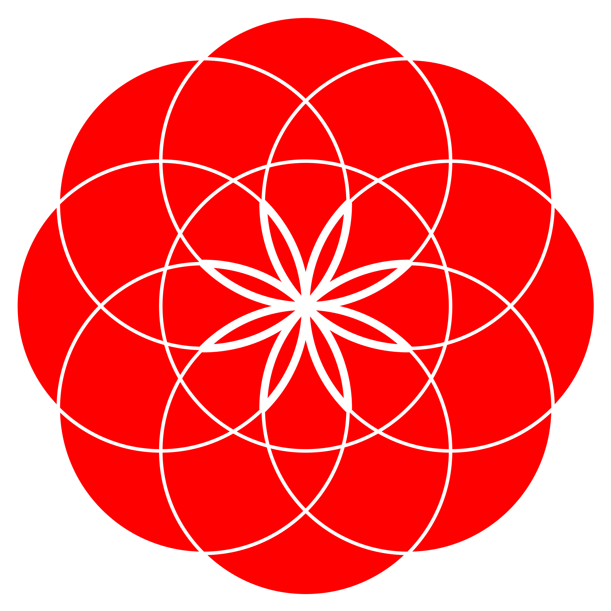

<!doctype html>
<meta charset="utf-8">
<title>WeBuddhist In-Person Controller</title>
<meta name="viewport" content="width=device-width, initial-scale=1">
<!--
  IN-PERSON version: same as controller.html, for events without a video stream.
  Only pushes the position to the WeBuddhist app (via server.js); no OBS overlays,
  no Hide button, no Break screen.

  Operator screen (Tibetan). Left = sections. Right = every screen of the
  current section, current one highlighted; tap any to jump there instantly
  (for when the umdze skips or you lose your place). ← / → / Space also advance.
  Rubrics (ritual instructions) show here only — never in the app.
-->
<style>
  :root {
    /* WeBuddhist app dark mode: true-black surfaces, gray dividers, white/gray text */
    --bg: #000; --card: #1c1c1e; --line: #2c2c2e;
    --ink: #f2f2f7; --ink-soft: #8e8e93;
    /* WeBuddhist brand red (the flower-of-life mark) — accents & active states */
    --accent: #e5231c; --accent-hover: #ff3a33; --brand: #e5231c;
    --sans: "Inter", system-ui, sans-serif;
    --tibetan: "Jomolhari", "Noto Serif Tibetan", "Noto Sans Tibetan", serif;
  }
  @import url("https://fonts.googleapis.com/css2?family=Inter:wght@400;500;600&family=Jomolhari&family=Noto+Sans+Tibetan&family=Noto+Serif+Tibetan&display=swap");
  * { box-sizing: border-box; }
  html, body { margin: 0; background: var(--bg); color: var(--ink); font-family: var(--sans); }
  body { display: grid; grid-template-columns: 340px 1fr; height: 100vh; }

  aside { border-right: 1px solid var(--line); overflow-y: auto; padding: 16px 12px; }
  /* WeBuddhist brand lockup: flower-of-life mark + wordmark, atop the section list */
  .brand { display: flex; align-items: center; gap: 11px; padding: 4px 8px 15px; margin-bottom: 8px; border-bottom: 1px solid var(--line); }
  .brand img { width: 34px; height: 34px; display: block; flex: 0 0 auto; }
  .brand-text { display: flex; flex-direction: column; line-height: 1.15; min-width: 0; }
  .brand-name { font-weight: 700; font-size: 18px; letter-spacing: .01em; color: var(--ink); }
  .brand-sub { font-weight: 500; font-size: 11px; letter-spacing: .11em; text-transform: uppercase; color: var(--ink-soft); margin-top: 2px; }
  aside h2 { font-size: 13px; letter-spacing: .1em; text-transform: uppercase; color: var(--ink-soft); margin: 4px 8px 14px; }
  .sec { padding: 11px 12px; border-radius: 7px; cursor: pointer; color: var(--ink-soft);
         font-family: var(--tibetan); font-size: 20px; line-height: 1.5; }
  .sec:hover { background: #1a1a1c; }
  .sec.active { background: var(--accent); color: #fff; }

  main { padding: 22px 34px 0; display: flex; flex-direction: column; min-width: 0; height: 100vh; }
  .status { font-size: 13px; color: var(--ink-soft); letter-spacing: .04em; }
  .conn-pill { font-size: 13px; padding: 4px 10px; border-radius: 20px; font-weight: 600; margin-left: 8px; }
  .conn-pill.ok { background: #1f3a24; color: #7fd598; }
  .conn-pill.bad { background: #3a1f1f; color: #e08585; }

  .sectitle { font-family: var(--tibetan); color: var(--ink); font-size: 24px; margin: 14px 0 2px; line-height: 1.5; }
  .progress { color: var(--ink-soft); font-size: 13px; margin-bottom: 12px; }

  /* Right pane: the whole current section, one screen (2 lines) per row */
  .verselist { flex: 1; overflow-y: auto; padding-right: 8px; }
  .vrubric { color: var(--ink-soft); font-size: 14px; font-style: italic; font-family: var(--tibetan);
             margin: 16px 0 4px; line-height: 1.4; }
  .vrubric:first-child { margin-top: 0; }
  /* Verses shown in natural paper layout: full block, blank line between verses */
  .verse { margin-bottom: 18px; }
  .vline { font-family: var(--tibetan); font-size: 23px; line-height: 1.7; color: var(--ink-soft);
           cursor: pointer; padding: 0 6px; border-radius: 5px; text-wrap: balance; overflow-wrap: break-word; }
  .vline:hover { color: var(--ink); background: #1a1a1c; }
  .vline.active { background: rgba(229,35,28,0.30); color: #fff; }

  .controls { display: flex; align-items: center; gap: 14px; padding: 16px 0 20px; margin-top: 8px; border-top: 1px solid var(--line); }
  button { font-family: var(--sans); font-size: 16px; font-weight: 600; border: 0; border-radius: 9px; padding: 13px 24px; cursor: pointer; }
  .prev { background: #2c2c2e; color: var(--ink); }
  .next { background: var(--accent); color: #fff; }
  .next:hover { background: var(--accent-hover); } .prev:hover { background: #3a3a3c; }
  .hint { color: var(--ink-soft); font-size: 13px; margin-left: auto; }
  .controls button { white-space: nowrap; }
  /* Left menu: "any time" group (Break, Tea) set apart from the running order */
  .secgroup { font-size: 11px; letter-spacing: .11em; text-transform: uppercase; color: var(--ink-soft); margin: 2px 12px 6px; }
  .secdiv { border-top: 1px solid var(--line); margin: 4px 8px; }
  .resume { background: #2c2c2e; color: var(--ink); border: 1px solid var(--accent); font-family: var(--sans); }
  .resume:hover { background: #3a3a3c; }
  /* Inline return button: jumps back to an earlier verse for repeated recitations */
  .retbtn { display: block; margin: -6px 0 18px 6px; background: #2c2c2e; color: var(--ink);
            border: 1px solid var(--accent); padding: 11px 20px; }
  .retbtn:hover { background: #3a3a3c; }
</style>

<aside>
  <div class="brand">
    
    <div class="brand-text">
      <span class="brand-name">WeBuddhist</span>
      <span class="brand-sub">In-Person Controller</span>
    </div>
  </div>
  <h2>Sections</h2><div id="list"></div>
</aside>
<main>
  <div class="status">The WeBuddhist app follows this controller.<span id="conn" class="conn-pill bad">connecting…</span></div>
  <div class="sectitle" id="sectitle"></div>
  <div class="progress" id="progress"></div>
  <div class="verselist" id="verselist"></div>
  <div class="controls">
    <button class="prev" id="prevBtn">← Previous</button>
    <button class="next" id="nextBtn">Next →</button>
    <button class="resume" id="resumeBtn" hidden></button>
    <span class="hint" id="hint">Tap any line to jump · ← / → / Space</span>
  </div>
</main>

<script>window.CHUNK_PER_VERSE = true;   // one click = one verse = one app segment</script>
<script src="sequence.js"></script>
<script>
  const el = (id) => document.getElementById(id);
  let SEQ = null, index = 0, ws = null, curSec = -1;
  let resume = null;      // sadhana position to return to after Break / Tea
  let started = false;    // this page has a position of its own (vs. a fresh load)
  const HINT = "Tap any line to jump · ← / → / Space";

  function send() {
    const c = SEQ.chunks[index];
    if (ws && ws.readyState === 1) {
      // Emit one position per mapped language edition (bo, en, …) so every language's
      // app readers auto-scroll — each edition is a separate library text with its own ids.
      const cues = [];
      const tids = (c && c.textIds) || (c && c.textId ? { bo: c.textId } : null);
      const sids = (c && c.segmentIds) || (c && c.segmentId ? { bo: c.segmentId } : null);
      if (tids && sids) {
        for (const lang of Object.keys(sids)) {
          if (tids[lang] && sids[lang]) cues.push({ lang, text_id: tids[lang], segment_id: sids[lang] });
        }
      }
      ws.send(JSON.stringify({ type: "set", index, cues }));
    }
    paint();
  }
  // All moves go through here. Entering Break/Tea from the sadhana remembers where we were;
  // landing back in the running order clears it.
  function jump(i) {
    const a = SEQ.chunks[index], b = SEQ.chunks[i];
    if (a && b && !a.anytime && b.anytime) resume = index;
    if (b && !b.anytime) resume = null;
    index = i; started = true; send();
  }
  // Next/Previous never roll into or out of Break/Tea (so Next on "Break time" can't
  // start the Tea prayers, and Next after Tea can't roll into the sadhana).
  function step(d) {
    const to = Math.max(0, Math.min(SEQ.chunks.length - 1, index + d));
    const a = SEQ.chunks[index], b = SEQ.chunks[to];
    if (a.sIdx !== b.sIdx && (a.anytime || b.anytime)) {
      el("hint").textContent = resume != null ? "End of section — use ↩ Back, or pick a section" : "End of section — pick a section on the left";
      clearTimeout(step._t); step._t = setTimeout(() => (el("hint").textContent = HINT), 2500);
      return;
    }
    jump(to);
  }

  function buildSectionMenu() {
    const list = el("list");
    // In-person: only sections that move the app. Break time is a stream-only title card.
    let groupShown = false;
    SEQ.sections.forEach((s, si) => {
      if (s.anytime && !SEQ.chunks.some((x) => x.sIdx === si && x.segmentIds)) return;
      if (s.anytime && !groupShown) {
        groupShown = true;
        const g = document.createElement("div"); g.className = "secgroup"; g.textContent = "Any time";
        list.appendChild(g);
      }
      if (!s.anytime && si > 0 && SEQ.sections[si - 1].anytime) {
        const d = document.createElement("div"); d.className = "secdiv"; list.appendChild(d);
      }
      const div = document.createElement("div");
      div.className = "sec"; div.dataset.s = si;
      div.textContent = s.title.bo || s.id;
      div.onclick = () => jump(s.firstChunk);
      list.appendChild(div);
    });
  }

  // Render every screen of section `si` as tappable rows.
  function buildVerseList(si) {
    const box = el("verselist");
    box.innerHTML = "";
    const secChunks = SEQ.chunks.filter((x) => x.sIdx === si);
    // group consecutive chunks back into their verses (natural paper blocks)
    const verses = [];
    let v = null;
    secChunks.forEach((ch) => {
      if (!v || v.vId !== ch.vId) { v = { vId: ch.vId, rubric: ch.rubric, chunks: [ch] }; verses.push(v); }
      else v.chunks.push(ch);
    });
    verses.forEach((vs) => {
      if (vs.rubric) {
        const r = document.createElement("div");
        r.className = "vrubric"; r.textContent = vs.rubric;
        box.appendChild(r);
      }
      const vd = document.createElement("div");
      vd.className = "verse";
      vs.chunks.forEach((ch) => {
        (ch.lines.bo || []).forEach((line) => {
          const ld = document.createElement("div");
          ld.className = "vline"; ld.dataset.gi = ch.gi; ld.textContent = line;
          ld.onclick = () => jump(ch.gi);
          vd.appendChild(ld);
        });
      });
      box.appendChild(vd);
      // Return button after the verse's last screen (e.g. repeat the 21 Praises).
      // Tap as often as the umdze repeats; Next simply moves past it.
      const ret = vs.chunks[vs.chunks.length - 1].returnTo;
      const target = ret && SEQ.chunks.find((x) => x.vId === ret.verse);
      if (target) {
        const b = document.createElement("button");
        b.className = "retbtn"; b.textContent = ret.label || "↺ Return";
        b.onclick = () => jump(target.gi);
        box.appendChild(b);
      }
    });
  }

  function paint() {
    const c = SEQ.chunks[index];
    if (!c) return;

    const rb = el("resumeBtn"), r = resume != null && SEQ.chunks[resume];
    rb.hidden = !(r && c.anytime);
    rb.textContent = "↩ Back to where I was";

    document.querySelectorAll(".sec").forEach((d) => d.classList.toggle("active", +d.dataset.s === c.sIdx));
    const act = document.querySelector(".sec.active"); if (act) act.scrollIntoView({ block: "nearest" });

    el("sectitle").textContent = c.sTitle.bo || "";
    const inSec = SEQ.chunks.filter((x) => x.sIdx === c.sIdx);
    const pos = inSec.findIndex((x) => x.gi === c.gi) + 1;
    el("progress").textContent = `Section ${c.sIdx + 1}/${SEQ.sections.length} · screen ${pos}/${inSec.length}`;

    // rebuild the verse list only when the section changes
    if (c.sIdx !== curSec) { buildVerseList(c.sIdx); curSec = c.sIdx; }

    let firstActive = null;
    document.querySelectorAll(".vline").forEach((d) => {
      const on = +d.dataset.gi === index;
      d.classList.toggle("active", on);
      if (on && !firstActive) firstActive = d;
    });
    // Teleprompter scroll: keep the active line in a comfort band near the upper
    // third, with lookahead below. Only scroll when it drifts out of the band,
    // and only here (on advance/jump) — never on a timer — so manual peeking
    // between taps is never fought.
    if (firstActive) {
      const box = el("verselist");
      const relTop = firstActive.getBoundingClientRect().top - box.getBoundingClientRect().top;
      const h = box.clientHeight;
      if (relTop < h * 0.20 || relTop > h * 0.65) {
        box.scrollTo({ top: box.scrollTop + relTop - h * 0.30, behavior: "smooth" });
      }
    }
  }

  function connect() {
    const proto = location.protocol === "https:" ? "wss" : "ws";
    ws = new WebSocket(`${proto}://${location.host}`);
    ws.onopen = () => { el("conn").className = "conn-pill ok"; el("conn").textContent = "connected"; };
    ws.onclose = () => { el("conn").className = "conn-pill bad"; el("conn").textContent = "reconnecting…"; setTimeout(connect, 1500); };
    ws.onmessage = (e) => { let m; try { m = JSON.parse(e.data); } catch { return; } if (m.type === "state") {
      if (!m.set) {
        // Fresh server: re-publish our position if we have one (server was restarted
        // mid-event), otherwise start at the top of the sadhana. Never lands on Break.
        if (!started) { const t = SEQ.sections.find((s) => !s.anytime); index = t ? t.firstChunk : 0; started = true; }
        send();
      } else { index = m.index; started = true; paint(); }
    } };
  }

  el("nextBtn").onclick = () => step(1);
  el("prevBtn").onclick = () => step(-1);
  el("resumeBtn").onclick = () => { if (resume != null) jump(resume); };
  document.addEventListener("keydown", (e) => {
    if (e.key === "ArrowRight" || e.key === " ") { e.preventDefault(); step(1); }
    if (e.key === "ArrowLeft") { e.preventDefault(); step(-1); }
  });

  loadSequence().then((seq) => { SEQ = seq; buildSectionMenu(); paint(); connect(); });
</script>
